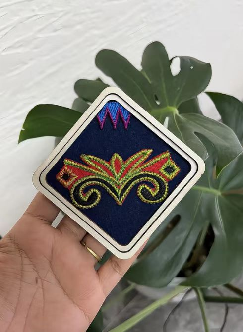

点击两块碎片交换位置，拼出完整的哈尼纹样

参考原图：哈尼刺绣回纹（拼好就是它！）
你拼出的是哈尼族经典的"回纹"刺绣纹样 —— 常见于衣襟、背包与头巾，象征生生不息。
连续曲折的螺旋纹，是哈尼刺绣中最常见的骨架纹样，寓意族群繁衍、生生不息。
锯齿状连续三角，多饰于衣襟与裤脚边，有人认为它记录着哈尼先民迁徙翻越的山峦。
几何菱形内套小菱形，如同梯田层层展开的剖面，是哈尼人对家园地貌的艺术抽象。
模拟蕨菜嫩芽卷曲形态的纹样，象征生机与春天，常出现在青年女子的盛装之上。